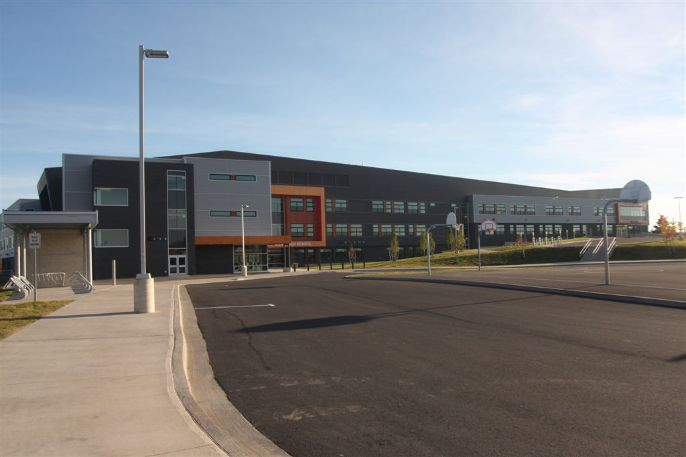

About me
Name: Lloyd Song
Date of birth: March 9, 1998
Nationality: Korean
Education: Graduated Charles P.Allen High School
in Bedford, NS

Currently attending IT Web Development in Nova Scotia Community College
Hobby: Tanking landscape photos
Favorite Music: Korean indie music
Favorite Color: White
Favorite Food: Egg benedict with salmon